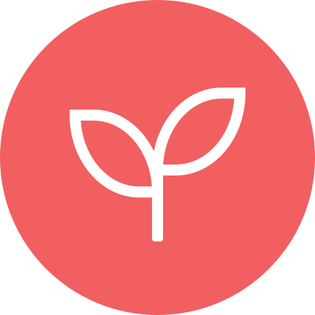
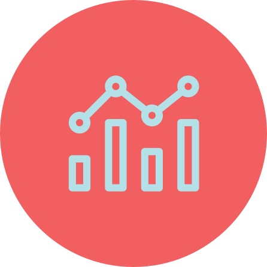
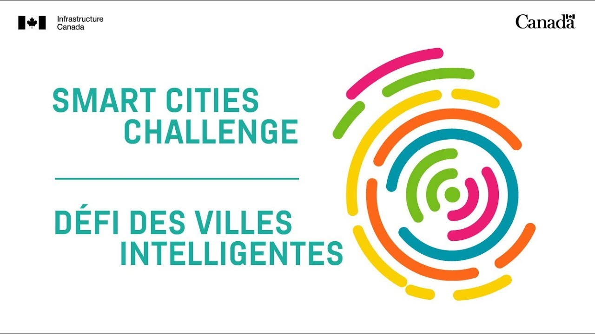
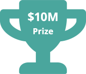
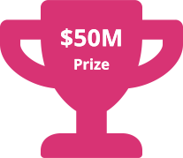
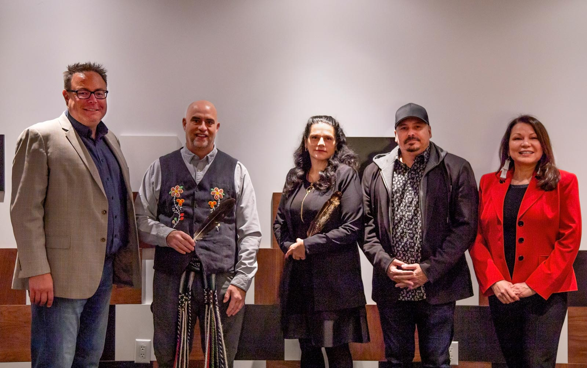

2018-2019 Annual Report
By the Impact & Innovation Unit
Foreword
The Impact and Innovation Unit is made up of highly skilled, dedicated public servants striving to deliver the best policies and programs, by taking a “mission-driven” approach to transforming government. Our central hypothesis is that by being relentless in our focus on outcomes-based methods and working horizontally across government and sectors, we can achieve better, measurable outcomes for Canadians. For those who work with and within government, you know that’s not always the way we work.
We understand that we’re stewards of public funds and the responsibility that carries. As such, it behooves us to modernize our policy and program approaches so that they are focused on achieving our collective outcomes, demonstrate value and meaningful impact. To this end, we’ve continued to take an active role in the global movement of governments that are working to mainstream methods like challenge prizes, behavioural insights, pay-for-performance and pay-for-success funding models. The promise of these methods is that it focuses efforts not on the process or outputs of a program, but rather on clearly defining the sought after outcome and ensuring there is a multisectoral approach to achieving it.
These approaches require new partnership models where government, not-for profit and private sectors need to work very differently together. We strongly believe that robust engagement, co-design, and co-development is the best path to get us there.
2018-2019 was our first full year of operations under Impact Canada, our main platform for undertaking this work. With the help of domestic and international partners, we spent a lot of time developing and refining methodologies to ensure the approaches we are taking are sound, evidence-based and rigorous by design. This type of work requires much more effort than traditional ways of working, but we feel confident that it is worth it.
“This type of work requires much more effort than traditional ways of working, but we feel confident that it is worth it.”
Not surprisingly, government as a whole is not ready for this at scale, but we have seen important pockets of readiness. Change is hard and can be unsettling for some. Our collective perception of risk is not calibrated appropriately. We shouldn’t equate new with risky. Rather, we need to constantly question status quo, understand the risks of maintaining it, and recognize when we need to responsibly test something new to achieve the desired policy objective. Ultimately, we need to adopt a more iterative approach to policy/program design and delivery.
We continue to work hard to move from concept to implementation, and to show what is possible and gain wider acceptance of these methods.
We’re still in early days and don’t have enough concrete outcomes, but there have been important process improvements. We’ve also received positive feedback from our external stakeholders regarding this new “look and feel” of government. Moreover, we have indications that the methods we use are attracting non-traditional players, on the premise that new players can lead us to better solutions not previously contemplated.
These methods are not silver bullets and are not the answer to every public policy challenge. We have been deliberate in project selection to cover social, economic and environmental policy areas, big and small, so that as we move to impact assessment, we will have a better understanding of what works, for whom, and under what circumstances. It’s why we are also developing new impact measurement methodologies to assess progress so that we can continuously learn and improve.
The past year has been filled with excitement, promise and lots of hard work. As such, I want to personally thank my team and other colleagues in the Privy Counil Office, Agriculture and Agri-Food, Atlantic Canada Opportunities Agency, Correctional Services Canada, Crown and Indigenous Relations, Employment and Social Development, Finance Canada, Fisheries and Oceans, Health Canada, Heritage, Indigenous Services, Infrastructure, Natural Resources, Public Safety, and Treasury Board Secretariat. Also, a huge thanks to our Advisory Committee and all of our external partners that have collaborated and helped guide our work.
Looking forward to another excellent and productive year as we all continue to work towards making the lives of Canadians better.
- Rodney Ghali
- Assistant Secretary to the Cabinet
- Impact and Innovation Unit
- Privy Council Office
Our Impact
-

Addressing innovation market gaps to stimulate private sector engagement and commercialization of innovative products, processes, and services in areas where there is great potential for applying Canadian ingenuity and improving social, economic, and/or environmental outcomes. For example, supporting Natural Resource Canada’s “Crush It Challenge”.
-
Reaching more people more efficiently to drive better access to post-secondary education among low-income families. For example, working with ServiceOntario to bundle RESP sign-ups.
-
Helping to understand what works by using research-based impact evaluations to generate evidence of which interventions are effective, and what elements could be further tested and scaled to replicate successful efforts and wind down less effective programs. For example, stemming the decline in charitable giving among Canadians by leveraging behavioural insights and experimentation.
-
Attracting non-traditional government partners from diverse sectors, including the private sector, who are bringing forward fresh perspectives and innovative approaches to address complex public policy issues. For example, supporting Health Canada’s “Drug Checking Technology Challenge".
-
 Leveraging innovative financing approaches to harness private sector resources to help meet common goals, make government a better partner, and shift the focus away from paying for process to paying for success. For example, exploring pay-for-success financing approaches with Health Canada.
Leveraging innovative financing approaches to harness private sector resources to help meet common goals, make government a better partner, and shift the focus away from paying for process to paying for success. For example, exploring pay-for-success financing approaches with Health Canada. -

Contributing to international generation of best practices by developing and publishing knowledge products and feeding into efforts of leading organizations around the world, which is resulting in international acknowledgement of the IIU’s contribution to the innovation ecosystem. For example, Measuring Impact By Design – a Guide to Methods for Impact Measurement..
1. About Us
Since its launch in 2017, the Impact and Innovation Unit (IIU) has remained focused on working with federal departments, other levels of government, and external partners to support the implementation of inventive programs and services designed to improve social, economic, and environmental outcomes for citizens. In particular, the IIU focuses on improving outcomes for citizens by using a set of innovative approaches designed to achieve greater public value in program and service delivery. The IIU seeks to engage a diverse range of actors to help solve societal problems, focus on initiatives/experiments that lend themselves to measuring impact in a rigorous way, and strive to maintain high standards and validity in applying these instruments. The principal approaches that the IIU uses to support Government of Canada departments are challenge prizes, pay-for-success funding models, and behavioural insights.
Did you know?
The Impact and Innovation Unit supports its partners with the following key resources:
- A flexible, whole-of-government set of Terms and Conditions for Grants and Contributions that allow funding to be linked to outcomes achieved (challenge prizes, pay-for-success), as well as funding rigorous, research-based evaluations
- An innovative staffing approach through its Impact Canada Fellowship program
- The Centre of Expertise, a small team that works with departments to apply the highest standards of rigour and robust program design in advance of implementation
- The Impact Canada Web Platform, a prominent, centralized website for Impact Canada initiatives
For more information, contact us at: iiu-uii@pco-bcp.gc.ca
1.1 The Impact and Innovation Unit
The IIU is staffed by a highly skilled, interdisciplinary team with decades of combined experience in policy/program development and management, outcomes-based
-

Rodney Ghali
Assistant Secretary to the Cabinet
-

Chad Hartnell
Director of Operations
-

Saskia Jarvis
Senior Advisor, Operations
-

Jessica Ly
Executive Assistant to the Assistant Secretary
Leadership
Policy and Innovative Finance
-

David Donovan
Lead
-

Kristalyn Laryea
Senior Advisor
-

Katharina Wolff
Senior Advisor
Behavioural Insights
-

Elizabeth Hardy
Senior Lead
-

Haris Khan
Advisor
-

Alyssa Whalen
Advisor
Public Engagement
-

Dr. Michael Haber
Lead
-

Laurie Bennett
Multimedia Communications Officer
-

Sarah MacMaster
Junior Advisor
-

Chris Soueidan
Visual Designer
Capacity and Partnerships
-

Julie Greene
Lead
-

Craig Joyce
Senior Advisor, Methods
-

Janelle Lanoix
Senior Advisor
Impact Canada Fellowship Program
-
Valérie Anglehart
Program Manager
1.2 The Fellowship Program
As part of the IIU’s mission to foster innovation in the public service, the Impact Canada Fellowship program recruits subject-matter experts into the public service in support of its work under Impact Canada, as well as the government’s broader efforts to accelerate the use of novel outcomes-based program approaches. The program aims to attract talent and build capacity in five key business lines:
-
Behavioural Insights(BI) applies the findings of psychology, economics, and other social sciences to the work of government. Practitioners of BI commonly test these insights using rigorous experimental methodologies to understand what works in driving better public policy outcomes for Canadians.
-
Innovative Finance (IF) is the strategic blending of public, private, philanthropic, and not-for-profit capital and resources to achieve positive economic, social, and/or environmental outcomes. This includes the use of pay-for-success instruments, where payments are contingent on funding recipients achieving outcomes that can improve the lives of Canadians (e.g., impact bonds, challenge prizes).
-
Impact Measurement (IM) can include a range of experimental (randomized controlled trials) and quasi-experimental methods. It‘s the process of using scientific methodology to determine outcomes achieved by a program. It allows for the attribution of changes in social, economic, and/or environmental outcomes.
-
Challenge Prize refers to an incentive-based approach that rewards the first or best solution to a specific problem, based on a set of pre-determined criteria. The goal is not only to seek out the best ideas and solutions, but also to ensure that these innovative funding models demonstrate that tangible and measureable results can be achieved for Canadians.
-
Data Science is an interdisciplinary field that uses scientific methods, processes, algorithms and systems to extract knowledge and insights from big data sources, in various forms.
Since last year’s launch, five recruitment processes have been completed. The current Fellowship cohort is comprised of seven BI Fellows, three IF Fellows, and three IM Fellows working across nine departments. We’re also looking to expand the program to other levels of government and discussions for placement opportunities with provincial, territorial and municipal levels of government are underway. Find details of the Fellows' work/projects webpage.
The Fellowship program is resulting in efficiencies for external recruitment in the federal public service. On average it takes the federal public service 197 days to hire a new employee using an external advertised competitive process. The Fellowship program‘s average is 90 days. Our most efficient process was run in only 42 days.
Our Fellows:
Behavioural Insights
- Dr. Guillaume Beaulac
- Dr. Lauryn Conway
- Dr. Amanda Desnoyers
- Michael Hewlett
- Dr. Kyle Hubbard
- Dr. Meera Paleja
- Dr. Dhawal Selarka
Innovative Finance
- Sophie Méchin
- Stefan Pagura
- Matthias Pries
Impact Measurement
- Lauren Dodds
- Dr. Gabriel Rompré
- Anna Vanderkooy
Back to top"The Fellowship program, sponsored by the Impact and Innovation Unit at the Privy Council Office, allows us to further experiment with ways to bring in important new skills."
- Clerk of the Privy Council, 26th Annual Report to the Prime Minister
1.3 The Advisory Committee
Meeting a commitment made by the IIU in last year’s annual report, the IIU organized the first meeting of the Impact Canada Advisory Committee in November 2018.
Chaired by Ilse Treurnicht, the Committee brings together a distinguished group of senior leaders from the private, philanthropic, not-for-profit, and academic sectors. Its mandate is to provide advice to the IIU on emerging trends and best practices to inform how public programs could enhance their impact through the use of innovative funding approaches (such as challenge prizes, pay-for-success structures, and impact investing), behavioural insights, and rigorous measurement and evaluation techniques.
Drawing from both Canadian and international experiences and lessons learned, the Committee is helping the IIU identify its unique role in the global innovation ecosystem. Closer to home, the Committee also continues to play a critical role in the development of a strategic plan that will guide future work and identify trends that the IIU can take into consideration as it continues to work to support departments across the Government of Canada.
2. What We Do
The IIU works with a broad range of partners to support federal departments in delivering on policies and programs that matter to Canadians. With a focus on results-driven approaches, the IIU is working hard to transform the way in which government works.
Methodological Approaches to Innovation
With its focus on federal programming and service delivery, the IIU works to identify, test, and scale inventive tools and methods that help to introduce an outcomes focus. Using innovative, methodological approaches, the IIU has demonstrated that innovation can, in fact, be carried out in a rigorous way and that the results of these actions can be defined, measured, and evaluated.
Relentless Focus on Implementation
With a focus on “the how”, the IIU supports federal departments and other partners to build agile, results-driven approaches that work for Canadians. Anchored by its Impact Canada Centre of Expertise, the IIU provides advice and guidance on the application of challenge prizes, pay-for-success approaches, and behavioural insights into federal programs and services. It also provides access to key resources that support departments to work with these innovative methods, including a flexible set of terms and conditions for grants and contributions and a prominent, centralized website supported by in-house visual and graphic design experts. The IIU offers a service model that can be tailored based on factors including the needs of the partner department
Achieving Impact at Scale
From its unique vantage point in the Privy Council Office, the IIU works across departmental mandates to measure impact, identify success factors for implementation, and determine what works in the federal context. It also draws on the experiences of other governments, non-profit, and private sector organizations in implementing similar approaches. Collectively, these actions are growing our understanding of how best to apply these approaches while factoring in operational context, organizational strengths and limitations, as well as the broader policy priorities of the Government of Canada. Further, the IIU’s support of key senior level committees is ensuring that these actions are being considered and informed by public sector executives, as well as external thought leaders and experts.
Systems-Level Transformation through Leadership and Strategy
The IIU remains focused on enabling systems-level change, including experimenting with and testing innovative approaches through its ongoing support of the Deputy Ministers Task Force on Public Sector Innovation and co-chairing the Assistant Deputy Minister Committee on Experimentation.
Deputy Ministers Task Force on Public Sector Innovation.
It has been one year since the Task Force received its new mandate from the Clerk of the Privy Council focused on two areas: (1) Facilitating core systems transformation, and (2) Experimenting with disruptive technologies.
Highlights from this past year include:
Informing an enabling framework document, A Data Strategy Roadmap for the Government of Canada, which launched on November 23, 2018. Its purpose is to help ensure a coordinated, whole of government approach to how the government can use data more strategically to unlock more value and deliver improved outcomes for Canadians.
Advancing the use of outcomes-based programming approaches (e.g., challenge-based approaches, pay-for-success initiatives) by shaping two distinct strategies for how outcomes-based programming approaches could be pursued: (1) the Treasury Board Secretariat (TBS) Generic Terms and Conditions, and (2) Impact Canada.
Engaging with experts on some of the key policy issues that drive public sector innovation, including using Artificial Intelligence to make operations as effective and efficient as possible, and using co-creation and partnership development approaches to understand how governments can engage all sectors of society to leverage resources and expertise to help address complex societal problems.
Guiding an in-depth stock take discussion on the experimentation mandate commitment to identify and address barriers to implementation.
“While we have made progress over this first year, we are only beginning to unlock the potential of public servants to mainstream innovation in our programs, policies and operations. We look forward to increasing our tempo of progress in the coming year.”
Co-chairs Graham Flack, Deputy Minister, Employment and Social Development & Matthew Mendelsohn, Deputy Secretary to the Cabinet, Results and Delivery, Privy Council Office
Government of Canada Entrepreneurs
To help achieve the Task Force on Public Sector Innovation’s mandate, Deputy Minister members recruited a cohort of 18 talented public servants known as Government of Canada Entrepreneurs (GCEs), who are full members of the Task Force. The creation of the GCEs themselves is an example of important efforts to upskill the federal public service and build the capacity required to support experimental programming.
Working in small, diverse teams across departmental lines, the GCEs are experimenting with new ways of advancing projects that do not have a natural home within a specific department or agency. Their role as ambassadors for innovation is raising awareness and inspiring public servants to apply new tools and approaches to their work. As an added benefit, the GCEs receive leadership training and support from Nesta’s States of Change, a public sector innovation learning approach designed to strengthen innovation capacity across governments.
Assistant Deputy Ministers’ Committee on Experimentation
As a co-chair of the Assistant Deputy Minister Committee on Experimentation with the Treasury Board Secretariat, the IIU has helped lead work to accelerate, deepen, and institutionalize experimentation and innovation across the Government of Canada. In the past year, the Committee has conducted a series of research initiatives to identify areas in which action is needed to encourage experimentation in government, and generated proposals to address those areas.
“Public servants are seeking clear signals that it’s okay to take risks. Innovating in the public service is hard work, and for those at the working level, it is even more so. For public sector innovation to thrive and grow, our workforce needs the support and the tools to challenge the status quo.”
Minh On and Laura Portal Avelar, Mission Managers of the first GCE Cohort
-
Rapid Growth Graph Description
Impact Canada: Since its launch in 2017, Impact Canada has experienced rapid growth. Impact Canada went through a design phase in 2017, a building phase in 2018 and it is currently looking ahead in 2019 towards the growth phase. The Design Phase saw the launch of projects such as the Smart Cities Challenge, and the completion of the Charitable Giving Trial 1. The Building Phase illustrated the grouth expereinced, as many projuects such as Women in CleanTech Challenge, Drug Checking Technology Challenge,and Power Forward Challenge were launched. In 2019, we expect to see the completion of many of our projects, announcing the winners of Smart Cities and Drug Checking Challenges, among other. Budget 2019 announced $300 Million for Housing Supply Challenge with INFC and CMHC, $20 Million for Food Waste Reduction Challenge with AAFC, Outcomes-based initiatives to address Food Security with AAFC and CanNor under Canada’s proposed new Food Policy and Outcomes-based initiatives as part of the new Anti-Racism Strategy with Canadian Heritage.
3. New Approaches to Big Issues
The IIU supports federal departments to apply outcomes-based funding models such as challenge prizes, use behavioural insights to improve policies and services, and integrate impact measurement into the implementation of projects and programs to achieve better and measurable outcomes.
3.1 Paying for Success
Outcomes-based funding models can take a variety of forms, including challenge prizes and pay-for-success contracts. In the past year, the IIU has continued to help departments develop innovative funding opportunities that bring together the best ideas and brightest talent, and reward those organizations and individuals that deliver high impact results for Canadians.
The IIU promotes partnerships with a diverse set of stakeholders. Want to solve a problem or sponsor a prize? Get in touch.
Challenge Prizes offer funding and other resources to help innovators put their ideas into action. They are an example of an open innovation approach which focuses resources on the desired outcome, not on cumbersome processes.
3.1.1 Flagship Challenge Prizes
Two signature program streams were launched as part of Impact Canada in 2017:
A. Smart Cities Challenge
Smart Cities Challenge to help communities of all sizes improve the lives of their residents through innovation, data and connected technology. Delivered by Infrastructure Canada and contributing $300M in funding over 11 years.
B. Cleantech Challenges
Cleantech Challenges to drive new solutions in discrete areas. Delivered by Natural Resources Canada and contributing $75 million in funding over four years.
3.1.1 (a) Smart Cities Challenge
The Smart Cities Challenge is a pan-Canadian competition that was open to communities of all sizes, including municipalities, regional governments and Indigenous communities (First Nations, Métis and Inuit). The Challenge encouraged communities to adopt a smart cities approach to improve the lives of their residents through innovation, data and connected technology.
The application process closed on April 24, 2018, receiving 130 eligible applications from communities across Canada. Twenty of those applications moved on to the finalist stage of the competition, each receiving $250,000 to help them develop their final proposal.
- 130 applications received
- 20 applications (joint or individual) from Indigenous communities
- The largest applicant had 2.7 million residents
- The smallest applicant had 185 residents
- 100% of finalists developed partnerships with at least four different sectors: private, not-for-profit, academic sectors, public utilities and community organizations
- Every province and territory was represented
"We appreciated that it was left wide open for communities to choose what was important to them. It spurred a lot of collaboration and conversation across the country."
Applicant
Round 1 Winners
-
Town of Bridgewater,
Nova Scotia -
Nunavut Communities,
Nunavut - 
City of Guelph and Wellington County,
Ontario - 
City of Montréal,
Québec
Advancing Cleantech Solutions
The IIU has supported Natural Resources Canada in investing $75M over four years in a series of clean technology challenges to unlock breakthrough cleantech solutions to complex and persistent barriers in discrete areas.
3.1.1 (b) Spotlight: Women in Cleantech Challenge
Launched in collaboration with MaRS Discovery District, this challenge prize supports the representation of women in the cleantech sector. Following a national call and expert selection process, the Women in Cleantech Challenge identified six women to participate in an intensive three-year program, during which they are provided with business advice, and the technical and financial support they need to grow and succeed as cleantech entrepreneurs, including unprecedented access to federal labs and researchers. At the end of the program, the most promising project will receive a $1 million grand prize.
The jury had planned to name five finalists, but included six because of the high-calibre of ideas presented.
-
Amanda Hall / Summit Nanotech
"Being chosen as a finalist in the Women in Cleantech Challenge early on really helped put wheels to the company, opened doors and exposed us to great opportunities. I hope this doesn’t sound bold, but it just feels like we are unstoppable right now."
-
Luna Yu / Genecis
"Having been through accelerator programs before, the sheer amount of resources made accessible through this [Women in Cleantech] program genuinely shocked my team and I — dedicated staff, experienced and multi-disciplinary advisors, access to NRCan Labs, quarterly stipend and training programs are all within reach."
-
Alexandra Tavasoli
"I think it’s really important for the next generation of females entering engineering to see women actually doing the technologies that they hope to one day be part of."
-
Julie Angus / Open Ocean Robotics
"I’ve been inspired by the five outstanding women who were also selected, met incredible entrepreneurs and mentors at MaRS and taken online courses in customer development and business strategy. (...) It’s been a ton of work, but often it feels more like play than toil, challenging my skills on every level."
-
Evelyn Allen
"In 15 years of working in this industry, I can’t name more than two female entrepreneurs leading cleantech companies. I am so excited to have this opportunity to grow a business with a mission to make a global impact."
-
Nivatha Balendra
"I think this challenge was the perfect opportunity in combining promoting women in science, which is something I deeply believe in, as well as developing a cleantech business. It just goes hand-in-hand."
"This initiative can help address the [gender] balance, as well as improve the planet."
Margaret Atwood, Challenge Judge
The Sky‘s the Limit
Launched in collaboration with Air Canada, Westjet, and the Green Aviation R&D Network, this challenge prize is focused on the development of new, lower-cost ways to produce sustainable aviation fuel (SAF) to reduce aviation greenhouse gas emissions and build a Canadian biojet supply chain. Four finalists have been announced for the Green Aviation Fuels Innovation Competition, representing regions from across the country and a variety of approaches to compete for the $5 million grand prize. The Cross-Canada Flight Competition to complete a cross-Canada flight using made-in Canada SAF remains open for application.
Power Forward
Launched in collaboration with the UK Department of Business, Energy and Industrial Strategy, this challenge prize aims to create cleantech market opportunities in both countries and fast-track development of cleaner, smarter power grids for 2030 and beyond. Six finalists will be selected to advance by August. Each is eligible to receive up to $3 million to start building their proposed project and compete for the $1 million grand prize.
Crush-It! Challenge
Launched in collaboration with the Centre for Excellence in Mining Innovation and Goldcorp, this challenge prize aims to advance innovative solutions that reduce energy use for crushing and grinding mined rock to reduce greenhouse gas emissions, improve productivity and help our mining industry become more competitive. Six finalists have been selected to advance. Each finalist is eligible to receive up to $800,000 to build and test his or her cleantech solution and compete for the $5 million grand prize.
Indigenous Off-Diesel Initiative
Launched in collaboration with the Indigenous Clean Energy Social Enterprise and the Pembina Institute, this initiative aims to achieve a breakthrough in efforts to transition 15 remote Indigenous communities off diesel as a primary energy source. An all-Indigenous external jury has selected 15 Champions to lead their remote communities in planning and implementing a clean energy project over the next three years. The Champions started their tailored clean energy training this May. Each community is eligible to receive up to $1.3 million to develop an ambitious diesel reduction plan for the community, establish partnerships and start implementing the plan.
3.1.2 New Partnerships Addressing Complex issues
3.1.2 (a) Responding to Canada‘s Opioid Crisis
Canada is in the midst of a public health crisis as it relates to the use of opioids and overdose deaths. The number of overdoses and deaths caused by opioids, including fentanyl, has risen sharply and continues to rise. More than 10,300 apparent opioid-related deaths occurred between January 2016 and September 2018. Among the 3,286 deaths that occurred between January and September 2018, 73% involved fentanyl or fentanyl analogues. It has never been more important to understand the composition of illegal drugs, and to intervene where we can to save lives.
In partnership with Health Canada and others, the IIU is working on projects to accelerate action on innovative approaches to harm reduction and treatment. In October 2018, the Drug Checking Technology Challenge was launched to incent the development of accurate, portable, and affordable opioid testing technology to reduce harm to those who use drugs. In March 2019, a Jury – comprised of scientists, front line service providers, people with lived and living experience, and entrepreneurs – selected nine semi-finalists from a robust number of applications. These semi-finalists received $25K in funding and advanced to subsequent rounds of the Challenge. The opioid testing technologies of this Challenge encompass new approaches to using existing technologies, or new and novel technologies, which may allow for more widespread deployment to people who use drugs.
Most of the 24 applicants to the Challenge were new to government, having never been funded through Health Canada‘s Substance Use and Addictions Program.
The past year was spent planning this challenge prize, starting in a very definitive place for exploration – looking at better protection from opioids for first responders – and ultimately landing in a very different direction. What changed our course? Constant citizen engagement in the planning process. A video illustration of the process by which an idea becomes a challenge prize was developed, using the Drug Checking Technology Challenge as an example.
At the same time, the IIU, Health Canada and other key partners in the clinical and financial sectors have been collaborating on a feasibility study examining and developing pay-for-success approaches for treatment options for opioid use disorder. We are seeking to understand what important gaps may be filled in service provision for those at highest risk of overdose, and the role for pay-for-success or social finance approaches in improving access to and outcomes for the treatment of opioid use disorder. The feasibility work will be completed in July 2019.

- Launched: October 2018
- The Challenge:Improve on drug checking technology to allow the community of people who use drugs and those who support them to make more informed decisions based on the composition of a drug and to reduce harm.
- Who will benefit? People who use drugs, peer support workers, and emergency responders.
24
Applicants from three countries
9
Semi-finalists receiving $25k in funding
1
Year from concept to launch
If we can help one person, the impact is massive.
Steve Cody, chair of the jury panel, CEO and Founder of Ruckify
3.1.2 (b) Indigenous Homes Innovation Initiative
Indigenous peoples experience some of the worst living conditions in Canada, and limited access to transitional or supportive housing options. Current programming for housing at Indigenous Services Canada (ISC) primarily provides needs-based funding, focused on immediate needs and emphasizing rapid construction. Given this reality, building designs are not always well-adapted to the full spectrum of geographic and cultural settings for which they are intended. Indigenous partners have identified the need to test innovative solutions that may support systemic long-term change and improvements to current programming.
To this end, in partnership with ISC, the IIU spent much of the past year working on a challenge prize that aims to improve outcomes through the co-creation of new and meaningful partnership models with Indigenous communities and civil society to address key socioeconomic issues related to housing. Launched in April 2019, the Indigenous Homes Innovation Initiative will provide up to $36M in new funding to improve socioeconomic outcomes related to housing for Indigenous Canadians. Co-created with an Indigenous Steering Committee, the Initiative will allow ISC greater flexibility in how funding dollars are used to support outcomes more holistically and more broadly reach Indigenous Canadians where they live.
The Indigenous Homes Innovation Initiative will provide up to $36M in new funding to improve socioeconomic outcomes related to housing for Indigenous Canadians.
For the first time, ISC will be able to incubate ideas taken in at any starting point but with good potential for impact, and see them through to fruition with the support of professional resources, through an Accelerator component of the Initiative. It is expected that up to 24 Innovators will participate in the Accelerator, with a minimum of 15 ideas going to construction over the next several years. These builds will be houses, housing units, or temporary living spaces. Builds will occur across the country, will be undertaken by all three distinction-based groups – First Nation, Inuit and Metis Nation – and will take place both on- and off-reserve. The Steering Committee will make recommendations for Accelerator participants in November 2019.
- Launched: April 2019
- The Initiative:Aims to find and support First Nation, Inuit and Métis Nation innovators who have housing ideas for rural, urban or remote Indigenous communities.
24
Up to 24 Semi-finalists
$350K
Up to $250K per innovator in funding and supports
$2M
Up to $2M per build for projects that will go to construction
The Indigenous Homes Innovation Initiative is based on a simple yet powerful idea: that the best solutions come from those who live the problem every day.
Indigenous Steering Committee
3.1.3 Supporting New Approaches with our Innovative Finance Fellows
Innovative Financing for Development with Global Affairs Canada
Global Affairs Canada is expanding its set of development financing tools to give the Government of Canada greater flexibility for financing arrangements and partnerships that help deliver on the Feminist International Assistance Policy. Two Impact Canada Fellows are bringing their financial expertise to the new International Assistance Innovation and Sovereign Loans Programs. These programs are developing and designing innovative financing structures that contribute to the UN Sustainable Development Goals, while ensuring Canada remains at the leading edge of development finance.
Scaling Social Finance with Public Health Agency of Canada
Public Health Agency of Canada’s (PHAC) Multisectoral Partnerships Program is working with an Impact Canada Fellow specializing in innovative finance in order to develop a social finance strategy and test new methods of funding and scaling projects that promote healthy living and prevent chronic disease in vulnerable populations. The fellow will also manage a contract to identify how the program can more strategically engage with matched funding partners. PHAC is leveraging its experience to become a Canadian leader in outcomes-based funding models.
3.1.4 Impact Canada Web Platform
Since November 2017, Impact Canada has been accessed over 180K times by approximately 110K unique users all over the world.
In December 2018, a freshly redesigned and more engaging web platform was released.
-
110K
Unique visitors
-
180K
Unique sessions
-
401K
Page views
-
Website
impact.canada.ca
3.2 Improving Policies and Services with Behavioural Insights
The IIU works with federal departments and agencies, provincial and municipal governments, and the non-profit sector to apply behavioural insights to public policy challenges. Behavioural insights (BI) is the application of findings of psychology, economics, and other social sciences to the work of organizations, including governments. Practitioners commonly test these insights using rigorous experimental methodologies to understand what works in driving better public policy outcomes for Canadians.
3.2.1 Improving Uptake of Canada Learning Bonds Among Low-income Families

In last year’s annual report, the IIU highlighted the integration of a Registered Education Savings Plan (RESP) sign-up service into the Ontario online birth registration service. The results from this integration have been very positive as 70-75% of new parents are scheduling appointments to open an RESP in Ontario. To help more Canadian families start saving early for post-secondary education, the IIU will continue to work with Employment and Social Development Canada and our provincial and territorial partners to scale this service.
In addition, the IIU has partnered with the City of Toronto to use BI principles in their communications with families in receipt of social assistance to help further increase Canada Learning Bond uptake. The results from this randomized controlled trial will be available in the summer of 2019.
3.2.2 Behavioural Insights and Charitable Donations
As part of the Giving Behaviours Project led by the Rideau Hall Foundation, the IIU partnered with Heart & Stroke to run two randomized controlled trials that apply findings from behavioural science to encourage charitable behaviour as well as contributed to the From Intentions to Action report authored with the Behavioural Insights Team.
As part of Trial 1, Heart & Stroke sent close to a quarter million emails to Canadians that had never donated to the charity.
The trial tested the following BI principles:
- Overhead Aversion - Studies have shown that donors give more and in larger amounts when they know that all of their donations are funding charitable programs.
- Goal Completion - Research suggests that people feel compelled to complete tasks if they are presented as part of an incomplete set of tasks.
- Social Matching - Providing social information of past donors has been shown to encourage charitable behaviour.
The trial found that the offer of matching funds resulted in 3.5 times the number of donations, when compared to a control group. To view the results of the trial, visit the Using Behavioural Insights to Encourage Charitable Donations webpage.
The results of the second trial will be available soon.
Building Capacity with our Behavioural Insights Fellows
3.2.3 Supporting Sustainable Choices with Environment and Climate Change Canada
Environment and Climate Change Canada (ECCC) works to protect and conserve our natural heritage, while ensuring a clean, safe, and sustainable environment for present and future generations. In support of this mandate, an Impact Canada Fellow is leveraging the principles of behavioural insights to better understand how Canadians can reduce plastics waste, take meaningful actions to address climate change, and support the transition to a circular economy. By designing and testing behaviourally-informed interventions, this work will help ECCC deliver policies and programs that effectively encourage sustainable choices from Canadians.
3.2.4 Improving GBA+ with Women and Gender Equality
Gender-based Analysis Plus (GBA+) is an analytical process used to understand how diverse groups of women, men, and non-binary people experience policies, programs, and initiatives. Working with the Department for Women and Gender Equality, an Impact Canada Fellow is leveraging behavioural insights to identify and understand culture and attitudes surrounding GBA+ in the public service, evaluate the efficacy of GBA+ training, and develop interventions to improve the quality of GBA+ in policy and program development.
3.2.5 Promoting Healthy Behaviours with Public Health Agency of Canada
The Public Health Agency of Canada‘s (PHAC) Multisectoral Partnership Program (MSP) advances innovative solutions to public health challenges by providing the co-investment needed to test or scale-up the most promising primary prevention interventions. An Impact Canada Fellow is working with the department to help improve the outcomes of MSP‘s portfolio of interventions by leveraging behavioural insights. With a strong understanding of what works in supporting and sustaining healthy behaviour change, PHAC can better encourage Canadians to live healthier.
3.2.6 Supporting the Safety of Canadians with Royal Canadian Mounted Police
The Federal Policing Criminal Operations unit supports specialized programs and teams who work in collaboration with domestic and international partners on intelligence-led investigations. The investigations focus on combating the risks presented to Canadians by organized crime groups. The unit is working with an Impact Canada Fellow to use an evidence-based approach informed by behavioural insights to help improve program outcomes and support the safety of Canadians.
3.2.7 Increasing Adoption of Security Behaviours with Global Affairs Canada
Global Affairs Canada (GAC) is redesigning its security awareness strategies for employees and Canadians travelling abroad. An Impact Canada Fellow is working on several behavioural insights trials to help GAC determine what works in increasing the adoption of appropriate security behaviours both domestically and internationally. These projects involve examining human factor analysis in IT security and testing innovative ways to encourage safety practices among employees.
In addition, two new BI Fellows will be joining Transport Canada and Employment and Social Development Canada in June 2019.
3.3 Measuring Impact by Design
As the work of the IIU is premised on improving outcomes for citizens, impact measurement is a core element and is embedded in the IIU’s work. Whether the motivation is to improve specific results in the context of pay-for-success arrangements, or a more general need to better understand what works in the area of public sector innovation, impact measurement supports every aspect of the IIU strategy. Fundamentally, measuring impact is about being open and accountable and helps to show others that things cannot only be done differently, but can also achieve greater impact. If this can be done, there is a better chance of building momentum across government to adopt novel approaches to programming in a broader, more systematic, and ultimately more impactful manner.
To this end, over the past year, the IIU published the first edition of its impact measurement guidance, Measuring Impact by Design. This was produced as core advice that can be drawn upon to ensure work on pay-for-success initiatives across government is supported with credible impact evaluations that help to account for the impact that takes place, but also to learn what works in the growing area of innovative finance. It clarifies what is meant by ‘impact’, and illustrates the range of methods the IIU and partners can use to measure it, drawing on contemporary thinking about impact evaluation.
When using the Impact Canada Evidence Scale, it is important to keep in mind that rigour is in the implementation, not the name.
Discover this and more with our new guide, Measuring Impact by Design.Fellowship Projects Focused on Measuring Impact
3.3.1 Strengthening Impact Measurement with Canadian Heritage
The Multiculturalism Program at Canadian Heritage (PCH) is one means by which the Government of Canada implements the Canadian Multiculturalism Act to advance priorities in the areas of multiculturalism and anti-racism. An Impact Canada Fellow is working with the Multiculturalism Policy Directorate to apply new impact measurement methodologies to program interventions to better understand what works, for whom, and to what extent, in the effort to achieve the equality of all Canadians in the economic, social, cultural and political life of Canada.
3.3.2 Making the Public Service more Accessible with Treasury Board of Canada
The Office of Public Service Accessibility (OPSA) is crafting a strategy to remove the barriers that prevent people with disabilities from reaching their full potential as employees within the public service. By striving to become an inclusive employer, the Government of Canada hopes to lead the way on accessibility and to test innovative approaches that can serve as an example for other federally regulated workplaces in Canada. An Impact Canada Fellow specializing in impact measurement is building evaluation mechanisms into this strategy to help inform future accessibility initiatives across the country.
4. Looking Ahead
Drawing from our past year’s experiences, lessons learned, and what has been said by key stakeholders and informants, the IIU’s areas of focus for the coming year include:
4.1 Smarter Implementation of Outcomes-Based Models
The IIU will continue to work with its federal and external partners to build the evidence-base around effective and efficient implementation of innovation methods that focus on achieving outcomes (i.e. behavioural insights, challenge prizes and pay-for-success instruments) to improve program and service delivery in the federal context. This includes providing ongoing support to its flagship program streams and current roster of projects.
In addition, Budget 2019 announced over $320 million in new funding, including:
-
a new Housing Supply Challenge in collaboration with Canada Mortgage and Housing Corporation
-
a Food Waste Reduction Challenge with Agriculture and Agri-Food Canada (AAFC)
-
outcomes-based projects in the areas of anti-racism with Canadian Heritage
-
food security and local food infrastructure in Canadian communities, including northern isolated communities with AAFC and the Canadian Northern Economic Development Agency
4.2 Behaviourally Informed Policy and Program Design
The IIU will continue supporting departments with behavioural insights expertise as they launch new programs and services in a variety of areas.
4.3 Expanding the Impact Canada Fellowship Program
The IIU is working with Statistics Canada to develop and launch a Data Science stream. In addition, we are looking to expand the program to other levels of government and discussions for placement opportunities with provincial, territorial, and municipal levels of government are underway.
4.4 Developing Case Studies and Knowledge Products
The IIU is developing case studies exploring lessons learned to date that can inform future work and other knowledge products related to its outcomes-based funding work. These efforts are contributing to the domestic and global evidence base that is resulting in a more effective use of these approaches.
4.5 Systems-Level Transformation through Leadership and Strategy
The IIU will continue to experiment and test innovative approaches at an organizational level through its ongoing support of the Deputy Ministers Task Force on Public Sector Innovation. The IIU will also remain focused on working with central agencies, departments, and external organizations to enable systems-level change, including by reducing barriers to innovation inside government; promoting, enabling, and delivering experimentation throughout government; and bringing in the perspectives and expertise of those outside government. The IIU’s work will continue to be informed by the advice provided by the Impact Canada Advisory Committee. A key area of focus for the coming year is the development of a strategic plan that will guide future work.
4.6 Seeking Out New Partners and Removing Barriers to Collaboration
No one team holds all of the expertise or ideas needed to solve some of society’s greatest challenges, which is why the IIU strives to bring together a diverse range of partners to advance results-driven action that yields greater public value through new and enhanced program and service delivery. The IIU will continue to take a collaborative approach to partnership, recognizing that each partner has a unique set of resources to offer to the partnership in order to add value to the end product.
In some cases, we have acted as brokers, bringing together departments with the right types of third-party intermediaries (outside of government) who can help them get from idea to launch. In other cases, the IIU takes a hands-on approach to co-creation, and works actively to bring other departments and partners to the table to jointly plan, design and bring to fruition a pay-for-success project.
Understanding our partners‘ resource capacity and desired way of working will help us to provide better advice and services.
5. Thank You
The IIU would like to thank the following government departments and non-governmental organizations for their collaboration and support:
- Agriculture and Agri-Food Canada
- Atlantic Canada Opportunities Agency
- Behavioural Insights Team
- Canadian Heritage
- Canadian Northern Development Agency
- Canada Mortgage and Housing Corporation
- City of Toronto
- Concordia University
- Correctional Services Canada
- Crown-Indigenous Relations and Northern Affairs Canada
- Department of Fisheries and Oceans
- Department of National Defence
- Department for Women and Gender Equality
- Employment and Social Development Canada
- Environment and Climate Change Canada
- Finance Canada
- Global Affairs Canada
- Health Canada
- Indigenous Services Canada
- Infrastructure Canada
- MaRS Centre for Impact Investing
- Mission Measurement
- Natural Resources Canada
- Nesta
- Public Health Agency of Canada
- Public Safety Canada
- Rideau Hall Foundation
- Rotman School of Management – BEAR
- Royal Canadian Mounted Police
- Treasury Board Secretariat
And many others!
6. Connect with us
General Inquiries
- Website: canada.ca/impact-and-innovation
- Email: iiu-uii@pco-bcp.gc.ca
Media Inquiries
- Email: mediacentre@pco-bcp.gc.ca
- Phone: (613) 957-5420
Social Media
- Twitter: @impact_innovEN
- LinkedIn: /companyimpact-and-innovation-unit
Address
Impact and Innovation Unit
85 Sparks Street
Ottawa, Ontario
Canada
K1A 0A3
©Her Majesty the Queen in Right of Canada, 2019. All rights reserved. ISBN: XXX-X-XXX-XXXXX-X
Report a problem on this page
- Date modified: